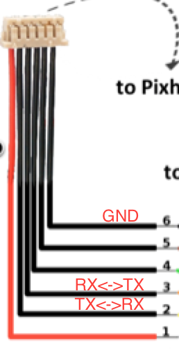

Pixhawk Interface Setup¶
Intro¶
OFFBOARD control means that we would like to be able to send (usually) high-level control commands to Pixahwk. For example, sending position, velocity , or acceleration set-points. Then, Pixhawk will receive those set-points and perform the neccessary low-level control (e.g. attitude/engines control).
In general, sending high-level commands is done off-board (board here refers to Pixhawk). In other words, an offboard computer is usually used to execute some code to take some high-level decisions. Then, high-level decisions are translated to set-points (e.g. position set-points) which, then, are sent to the Pixhawk to be executed. For example, an offboard computer can be used to do run some image processing algorithm for object tracking. The output of the algorithm is position set-points to tell Pixhawk to move to the direction of the tracked object.
In general, executing such offboard tasks are not feasible due to the limited resources on Pixhawk. Therefore, more powerful computers are used.
Offboard computers can be single board computer (or SBC in brief), e.g. ODROID XU4. Or, it can be a fully loaded workstaton, desktop, or laptop.
In summary, Pixhawk is used as a flight controllers. Whereas, offboard controller are used to execute more sophisticated tasks.
In this guide, we will learn how to do offboard control from an SBC (ODROID XU4), and from desktop/laptop that runs MATLAB. In both cases, we need to setup the required hardware interface. We will discuss two main interfaces: Serial interface, and WiFi interface. See next sub-sections for details.
Off-board serial interface¶
Serial interface with Pixhawk can be done using:
- Radio modules:
- XBee module
- 3DR telemetry module
- Wired serial:
- Direct serial interface
- FTDI/USB
WiFi Interface with ESP-07¶
In this tutorial, we are going to use the ESP8266 WiFi module to communicate with Pixhawk via WiFi.
Required:

- FTDI/USB cable to flash firmware.

Connect the FTDI/USB cable to the ESP module. The orange cable (TX) is connected to (RX) pin on the module. Yellow cable (RX) is connected to (TX) pin on the module. Connect the power (red) and ground (black).
Follow the this guide to flash and setup the ESP8266.
Note
Use platformio run -e esp01_1m -t upload to upload the firmware to the board.
Connect the module to the Pixhawk as follows.
{kind=link}
Important
You first need to make sure that you configured TELEM2 port to be used for ESP link with baud 921600. You can do this, by first, connecting to Pixhawk via USB, and modify the SYS_COMP parameter in the System tab on the left. Now, you can proceed.
Power-on the Pixhawk with the WiFi module connected to TELEM2 as mentioned above.
Search for the Pixracer WiFi network. Connect to that network with the password pixracer.
Open QGroundControl and connect using UDP connection.
Now you are connected to Pixhawk via WiFi. The Wifi Module is in Access point mode by default, and it creates its own WiFi network (Pixracer). If you wish to connect to your own local WiFi network, then in QGC, while you are connected to Pixracer network, go to the WiFi Bridge tab on the left and choose station mode.
Write the desired network name and password in the appropriate field.
Restart Pixhawk, and the WiFi module should try to connect to your local network.
Now, you can connect your machine to the same local network, then connect to Pixhawk from QGroundControl via UDP.
WiFi Interface with WiFly RN XV¶
In this section, we learn how to setup a WiFi communication with Pixhawk using the RN-XV WiFly module.
Requirements:
- Pixhawk: calibrated and ready to fly
- WiFi module [RN-XV WiFly Module - Wire Antenna. Available here.
- XBee explorer USB to configure WiFi module via PC
- Xbee breakout board to interface with Pixhawk
In this tutorial, TELEM2 is going to be used to connect the WiFi module at baud rate 921600. TELEM1 can be used too, but will require further configuration steps, but you can still use it directly at baud 57600 (which is its default).
Pixhawk TELEM setup¶
To set the baude rate of TELEM2 to 921600, connect Pixhawk to QGroundcontrol. Go to the System tab. Change the SYS_COMP parameter to use companion with 921600 baudrate. Restart Pixhawk to take effect.
WiFi module setup¶
Official Roving Network documentation
Connect the WiFi module to the XBee explorer USB board and connect it to the computer. You will need to use a serial terminal. For Mac, use the Mac terminal. For Windows it is recommended to use TeraTerm.
On a Mac terminal, use the screen command to log into the Wifly
screen /dev/tty.usbserial-FTFABC 9600 8N1
/dev/tty.usbserial-FTFABC is the device port on Mac. You can find yours using
ls /dev/tty*
After you login, type $$$ and hit ENTER
Type to make sure that the device is operational.
scan
If there are networks, it should be listed.
Serial setup¶
You can change the serial baudrate by
set u b 57600
Warning
Make sure that you use the new baud rate to connect again to the device via serial port.
WiFi setup¶
Set authentication to WPA2-PSK only:
set wlan auth 3
Set auto channel scan
set wlan channel 0
Tell the module to auto-join the network when powered on:
set wlan join 1
Set wireless name, SSID
set wlan ssid <your wifi ssid>
Set WiFi password
set wlan phrase <password>
Enable continous scanning
set wlan linkmon 5
IP setup¶
This guide assumes UDP communication to a ground control station computer on IP 192.168.1.100, port 14550 (QGroundControl default port).
Set dynamic IP (recommended)¶
Enable DHCP on each boot (for dynamic IP):
set ip dhcp 1
Set IP protocol (UDP & TCP)
set ip protocol 3
Set remote port:
set ip remote 14550
Set remote hos IP (IP of your PC):
set ip host 192.168.1.100
Test and save configurations¶
Join the WiFi
join <WiFi ssid>
If it connects, it will show:
Save and reboot
save
reboot
Attention
Make sure that you save your settings, otherwise it will be lost
To check the settings current yon the device,
- IP settings:
get ip
- WiFi settings:
get wlan
- Serial settings:
get u
Static IP¶
Disable DHCP mode
set ip dhcp 0
Set the WiFi module’s IP address
set ip address <choose ip>
your IP first 3 numbers (e.g. 192.168.1.\*) should be the same as your router’s first three numbers
Set IP gateway (usually this is your router’s IP). You can first set up dynamic IP, and then connect to the WiFi. Then, on the WiFi module command line type get ip to see the gateway and the netmask, and note them down. Set the gateway and netmask as follows,
set ip gateway <router ip address>
Set netmask:
set ip netmask <netmask address>
Set local port. You can leave the default (2000)
set ip localport 2000
Set the remote host IP and remote port as before.
Save and reboot
save
reboot
Make sure that the device can join the WiFi network. Log in to the device using (e.g. screen command), and type $$$. Then join the network by typing join <network ssid>
Once successful, you can now go to next step to set higher baud rates.
Configure higher baud rates¶
Warning
DO NOT set high baud rates while you are on serial (e.g. 921600), because you will not be able to log in again from the serial console. You can set higher baud rate after you log in to the WiFly module via WiFi, using telnet command in Mac OS
First make sure your computer is connected to the same router as the WiFly device. Open a terminal and type,
telnet <wifly ip address> <wifly localport>
then type $$$, and hit ENTER
Set high baudrate
set u b 921600
Save and reboot
save
reboot
Finally, attach the WiFly device to an XBee explorer requlated board, and connect it to TELEM2.
Now you are ready to communicate with the Pixhawk via WiFi!